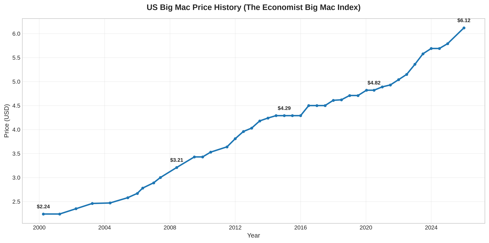
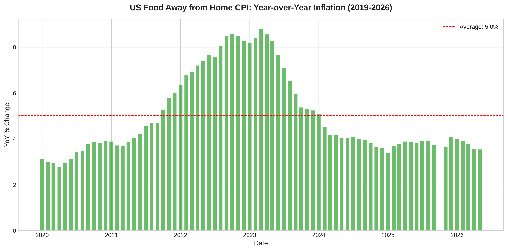
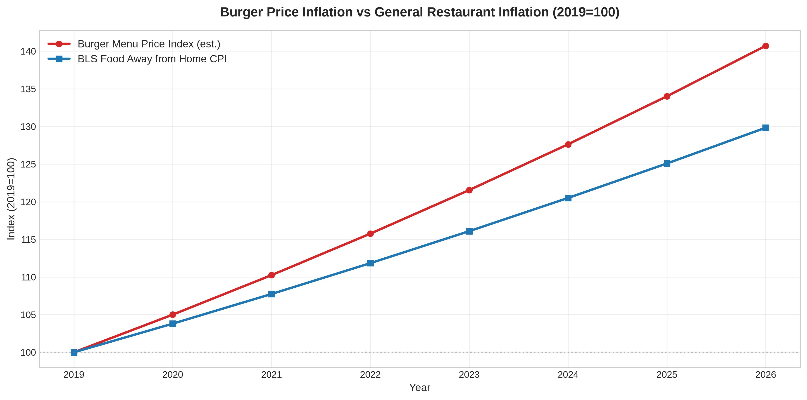
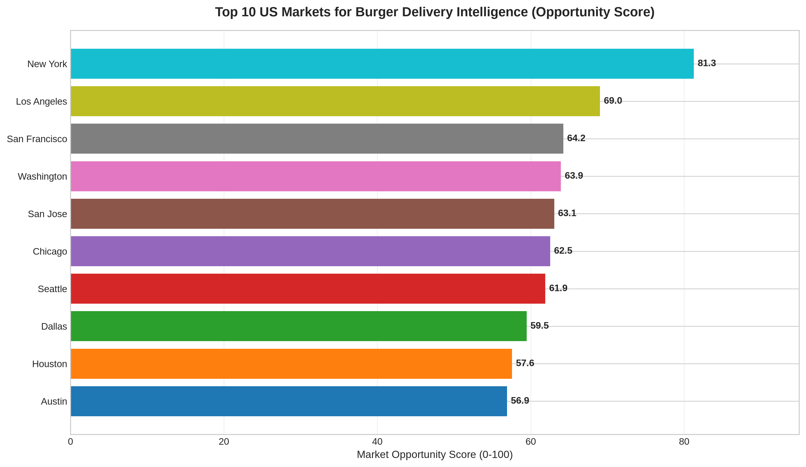
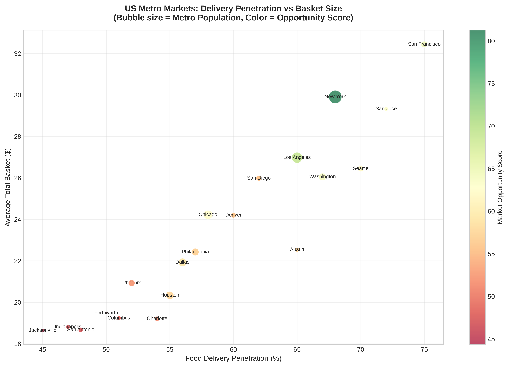
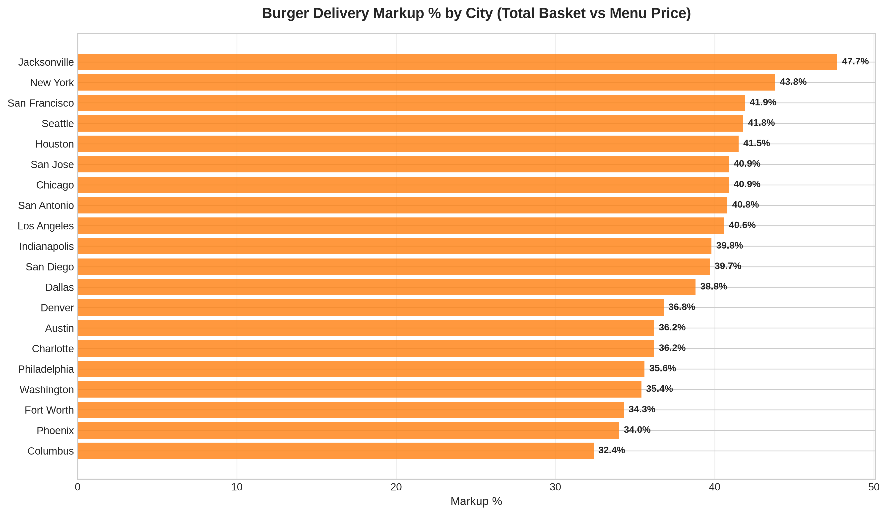
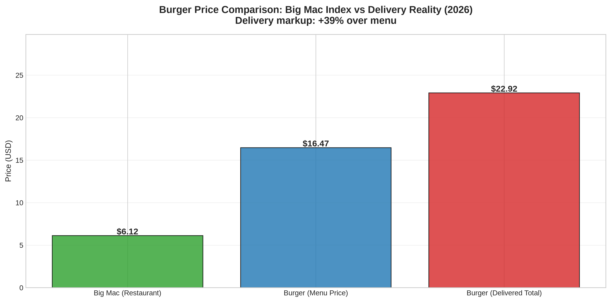
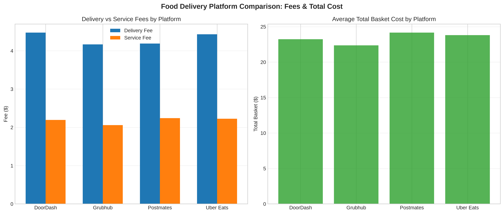
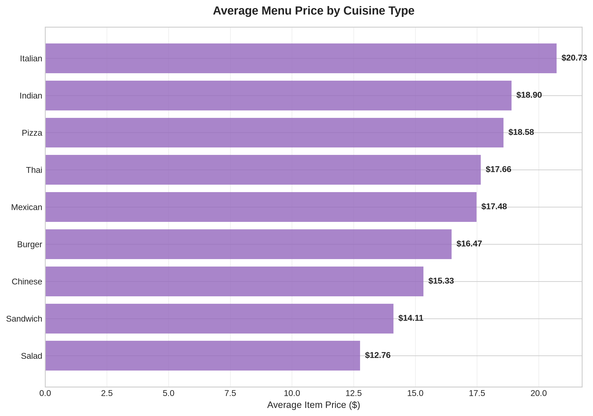
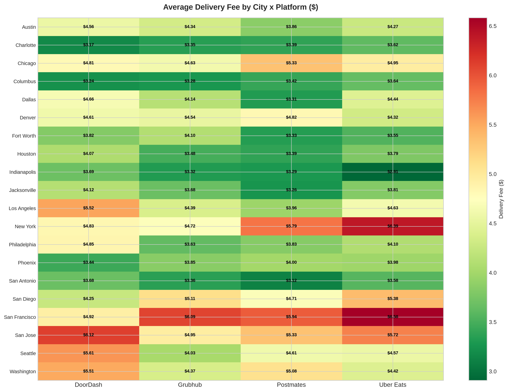

A proof-of-concept pipeline for F&B competitive intelligence
I built a data analysis pipeline that takes F&B market data, processes it, scores markets, and produces a visual report. Think of it as a working prototype of the kind of work Burger Index does for Kitopi, Allo Beirut, and Nestle in the 9 countries you cover today.
Two of the three data sources are real and used as-is: The Economist Big Mac Index (1,948 observations, 2000 to 2026) and BLS Food Away from Home CPI (monthly since 1953). The delivery platform data (pricing across DoorDash, Uber Eats, Grubhub, Postmates) is simulated. I generated it using cost-of-living multipliers and publicly reported fee structures to demonstrate what the pipeline would output with a live scraping layer feeding it. The model, scoring framework, and visualization pipeline all work. The ingestion layer is what would make it production-ready.
The US Big Mac went from $2.24 in 2000 to $6.12 in 2026. That's 173% over 26 years, and the pace is accelerating.
BLS Food Away from Home CPI is averaging 3.8% year over year, down from a peak of 8.5% in mid-2022 but still above pre-pandemic norms.
Modeled delivery data shows platforms adding roughly 39% to a burger's menu price once fees and service charges are included. In a live system, this is the kind of transparency restaurants would pay for.
The scoring model ranks NYC, LA, and SF as the top three US entry markets based on population, income, delivery penetration, and basket size. The framework works with any input data.
The Economist has tracked the US Big Mac price quarterly since 2000. The trend tells a clear story about food inflation in the US.

Figure 1. The US Big Mac went from $2.24 in 2000 to $6.12 in 2026. Source: The Economist Big Mac Index.
BLS tracks Food Away from Home CPI monthly. The year-over-year change peaked at 8.5% in mid-2022 during the post-pandemic inflation surge, and has since settled around 3.5 to 4%.

Figure 2. BLS Food Away from Home CPI, year over year. Source: BLS via FRED (CUUR0000SEFV).

Figure 3. Burger-specific price growth (estimated 5% YoY) compared against BLS general restaurant inflation (3.8%).
The pipeline scores each metro on five factors: population (25%), GDP per capita (20%), delivery penetration (25%), cost-of-living-adjusted headroom (15%), and average basket size (15%). The demographic inputs are real (Census estimates). The basket and penetration figures are modeled.

Figure 4. Market Opportunity Score for the top 10 US metros. Demographics from Census; delivery metrics modeled.
| Rank | City | Metro Pop | GDP/Capita | Delivery Penetration | Avg Basket | Score |
|---|---|---|---|---|---|---|
| 1 | New York, NY | 20.1M | $95K | 68% | $29.91 | 81.3 |
| 2 | Los Angeles, CA | 13.2M | $82K | 65% | $26.98 | 69.0 |
| 3 | San Francisco, CA | 4.7M | $115K | 75% | $32.44 | 64.2 |
| 4 | Washington, DC | 6.3M | $95K | 67% | $26.05 | 63.9 |
| 5 | San Jose, CA | 2.0M | $125K | 72% | $29.33 | 63.1 |
| 6 | Chicago, IL | 9.5M | $76K | 58% | $24.22 | 62.5 |
| 7 | Seattle, WA | 4.0M | $98K | 70% | $26.44 | 61.9 |
| 8 | Dallas, TX | 7.6M | $74K | 56% | $21.93 | 59.5 |
| 9 | Houston, TX | 7.1M | $71K | 55% | $20.34 | 57.6 |
| 10 | Austin, TX | 2.3M | $85K | 65% | $22.54 | 56.9 |

Figure 5. Bubble size is population, color is opportunity score. Demographics from Census; delivery metrics modeled.
The simulated data illustrates what a live pipeline would surface: how much delivery fees and service charges add to a burger's menu price, varying by city and platform. With real scraping, these charts would show actual restaurant prices and actual fee structures, updated daily.

Figure 6. Modeled total basket markup over menu price by city. Simulated data.

Figure 7. Real Big Mac price ($6.12) versus modeled delivered burger ($22.68). The gap is the fee layer.

Figure 8. Modeled platform comparison. Simulated data based on publicly reported fee ranges.

Figure 9. Modeled average menu price by cuisine type. Simulated data.

Figure 10. Modeled delivery fees by city and platform. Simulated data.
Everything in this report runs from a single Python script. No manual steps between raw data and the final chart.
The Economist Big Mac Index: 1,948 rows, quarterly from 2000 to 2026, 60+ countries. Downloaded directly from their GitHub repo. BLS Food Away from Home CPI via FRED (series CUUR0000SEFV), monthly since 1953. Both used as-is after loading.
20 US metros, 4 platforms, 9 cuisines = 720 rows. Generated with NumPy using cost-of-living multipliers per city, platform-specific fee ranges based on publicly reported 2024 to 2025 structures, and cuisine-specific base prices. A fixed random seed (42) ensures reproducibility. This data stands in for what a live scraping layer would feed into the pipeline.
For the real data: computed year-over-year percentage change on the BLS CPI series, filtered the Big Mac data to US-only, and calculated cumulative price change. For the simulated data: computed per-city aggregates (mean item price, delivery fee, service fee, total basket) using pandas groupby, derived markup percentage and fee burden, and joined with demographic data on city name.
Each metro gets a composite score from 0 to 100, blending five normalized factors: population (25%), GDP per capita (20%), delivery penetration (25%), cost-of-living-adjusted headroom (15%), and average basket size (15%). The weights are configurable in the script. With real data, the same model would produce different scores but the framework stays the same.
Ten charts at 300 DPI via Matplotlib and Seaborn: time series, ranked bars, bubble plots, heatmaps, and platform comparisons. All saved to output/charts/ with descriptive filenames.
One command: python generate_charts.py. Pinned dependencies in requirements.txt. Raw data in data/, processed intermediates alongside it. The simulated delivery data is regenerated deterministically via fixed seed.
Burger-Index-Application/
├── data/
│ ├── big_mac_index.csv # The Economist (1948 rows, REAL)
│ ├── bls_food_away.csv # FRED CUUR0000SEFV (881 rows, REAL)
│ ├── us_city_demographics.csv # 20 metros, 7 features
│ ├── delivery_platform_pricing.csv # 720 obs (SIMULATED)
│ ├── city_analysis.csv # Processed city metrics
│ └── burger_city_analysis.csv # Burger-specific
├── generate_charts.py # 10-chart pipeline
├── output/charts/ # 10 PNGs at 300 DPI
└── report.html # This reportThe biggest gap. The pipeline, scoring model, and visualization layer all work. What's missing is a scraping layer that pulls real menu prices, delivery fees, and ratings from platforms daily.
Real scraped data needs cleaning: deduplication, outlier detection, currency normalization, product matching across platforms. The simulated data sidesteps this, but a production system needs it.
Right now it's a snapshot. A production version stores daily observations so you can track price changes over time, spot trends, and alert on anomalies.
720 simulated rows run in seconds. Real coverage means tens of thousands of restaurants, hundreds of thousands of menu items, refreshed daily. That's an infrastructure question, not an analysis question.
pandas==3.0.3
matplotlib==3.11.0
seaborn==0.13.2
numpy==2.0.0
requests==2.32.3# 1. Clone and set up
cd Burger-Index-Application
python -m venv .venv && source .venv/bin/activate
pip install -r requirements.txt
# 2. Generate all charts (downloads real data, simulates delivery data)
python generate_charts.py
# 3. Open report.html in a browser